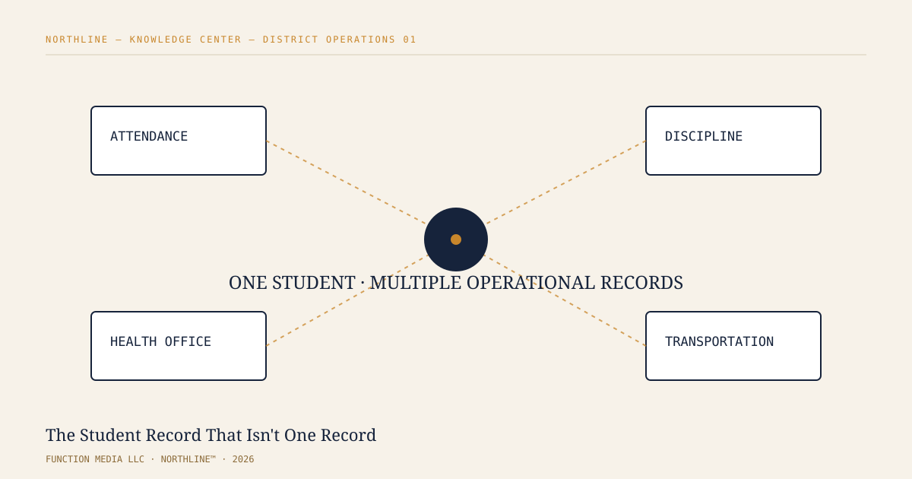

Why a district's most important safety and wellbeing patterns live in the gaps between its attendance, discipline, health-office, and transportation systems — not inside any one of them.

A student misses first period three times in one week. On Tuesday, the bus log shows a route delay. On Wednesday, the health office records a morning visit. On Friday, a discipline referral appears after lunch.
Each event may be ordinary on its own. The operational problem is that each event often lives in a different system, owned by a different team, with a different timestamp, identifier, workflow, and permission boundary. The district does not have one student record in the practical sense. It has many records that may describe the same student at different moments.
K–12 districts have accumulated specialized systems because specialized work requires them. Student information systems manage enrollment and attendance. Transportation platforms manage routes and exceptions. Health-office systems document visits and care. Discipline modules track incidents and referrals. Facilities, meal-service, special-program, and communications tools add still more operational context.
That specialization is not itself a failure. The difficulty appears when a question crosses system boundaries.
When systems do not share a reliable way to resolve identity and context, staff may be forced to search manually, compare timestamps, reconcile spelling or identifier differences, and decide whether two records belong together. The work becomes slower precisely when the situation requires a coherent picture.
A student can be represented by a district student ID in one application, a transportation identifier in another, a name and date of birth in a third, and a locally generated incident number somewhere else. Even when every source is accurate, the district can still face an entity-resolution problem: determining when separate records refer to the same real-world person or situation without flattening away the provenance of those records.
Good resolution is not the same as merging everything into one database. In a governed environment, the source matters. The timestamp matters. Permissions matter. A transportation record should remain a transportation record; a health-office record should remain a health-office record. The useful layer is the ability to connect authorized evidence while preserving where each piece came from.
Consider a hypothetical pattern: repeated late arrivals, several health-office visits, a transportation exception, and a disciplinary incident. None of those signals automatically proves a safety or wellbeing problem. They may be unrelated. But a staff member who is authorized to see the relevant information may reasonably need to know that the signals occurred close together.
The value is not in having software declare what the pattern means. The value is in reducing the mechanical work required to see that a pattern may exist, then allowing qualified people to interpret it.
Cross-system visibility creates its own responsibility. A district should be able to distinguish an original source record from a derived connection or machine-generated signal. Staff should be able to tell what evidence supports a relationship, when it was observed, and which system produced it.
That is especially important when automated reasoning or AI is introduced. A generated conclusion without traceable evidence can create false confidence. A useful operational system should make the path back to source material clearer, not harder to inspect.
The long-term challenge for districts is therefore larger than dashboard design. It is an infrastructure question: how to connect permitted operational evidence across specialized systems while maintaining identity, provenance, timing, and access boundaries.
That foundation can support better search, faster investigation, clearer workflows, and more accountable use of automated analysis. It can also make uncertainty visible. Two records may be strongly linked, weakly linked, or unresolved; the system should not pretend those states are the same.
Function Media LLC is an early-stage company developing NORTHLINE™, district-operations infrastructure intended to help authorized district staff connect records they're already permitted to see — attendance, discipline, health-office, and transportation data — while preserving the source, timing, and permissions behind each one. NORTHLINE is under development. It is not currently deployed at any school district, and no claim is made here about adoption, certification, or endorsement by any district, state agency, or organization. Nothing described here is meant to replace the judgment of the counselors, administrators, and staff whose job it is to act on this information.
The design principle is straightforward: operational intelligence should make evidence easier to connect and easier to inspect without erasing the systems and people responsible for that evidence.